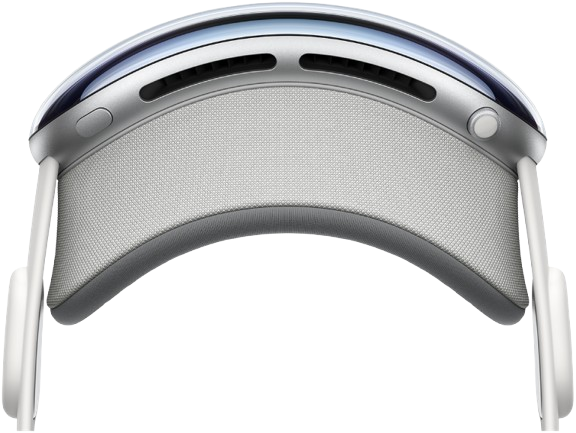

Introduction...
Welcome to the era of spatial computing
Apple Vision Pro seamlessly blends
digital content with your physical space.
watch the film
watch the event

Apps
Free your desktop.
And your apps will follow.
Your apps live in
your space.
With Vision Pro, you have an infinite canvas that transforms how you use the apps you love. Arrange apps anywhere and scale them to the perfect size, making the workspace of your dreams a reality — all while staying present in the world around you. Browse the web in Safari, create a to-do list in Notes, chat in Messages, and seamlessly move between them with a glance.
Design
Designed by Apple.
Apple Vision Pro is the result of decades of experience designing high‑performance, mobile, and wearable devices — culminating in the most ambitious product Apple has ever created. Vision Pro integrates incredibly advanced technology into an elegant, compact form, resulting in an amazing experience every time you put it on. Enclosure. A singular piece of three-dimensionally formed laminated glass flows into an aluminum alloy frame that curves to wrap around your face. Light Seal. The Light Seal
Enclosure A singular piece of three-
dimensionally formed laminated glass
flows into an aluminum alloy frame that
curves to wrap around your face.
Light Seal The Light Seal gently
flexes to conform to your face,
delivering a precise fit while blocking
out stray light.
Head Band. The Head Band provides
cushioning, breathability, and stretch.
The Fit Dial lets you adjust Vision
Pro precisely to your head.
Power. The external battery supports
up to 2 hours of use,
and all‑day use when plugged in.1
Sound. Speakers positioned close to
your ears deliver rich Spatial Audio
while keeping you aware of your
surroundings.
EyeSight. An outward display reveals
your eyes while wearing Vision Pro,
letting others know when you
are using apps or fully immersed.

A singular piece of three-dimensionally formed laminated glass acts as an
optical surface for the cameras and sensors that view the world. It flows
seamlessly into a custom aluminum alloy frame that gently curves to wrap
around your face while serving as an attachment point for the Light Seal.

Technology
Innovation you can
see, hear, and feel.
Pushing boundaries from the inside out. Spatial experiences on Vision Pro are only possible through groundbreaking Apple technology. Displays the size of a postage stamp that deliver more pixels than a 4K TV to each eye. Incredible advances in Spatial Audio. A revolutionary dual‑chip design featuring custom Apple silicon. A sophisticated array of cameras and sensors. All the elements work together to create an unprecedented experience you have to see to believe.

More pixels than a 4K TV. For each eye.
The custom micro‑OLED display system features 23 million pixels,
delivering stunning resolution and
colors. And a specially designed
three‑element lens creates the feeling of a display that’s
everywhere
you look.
Our most advanced Spatial Audio system ever.
Dual-driver audio pods positioned next to each ear deliver personalized sound while letting you hear what’s around you. Ambient Spatial Audio makes sounds feel like they’re coming from your surroundings. And with audio raytracing, Vision Pro analyzes your room’s acoustic properties — including the physical